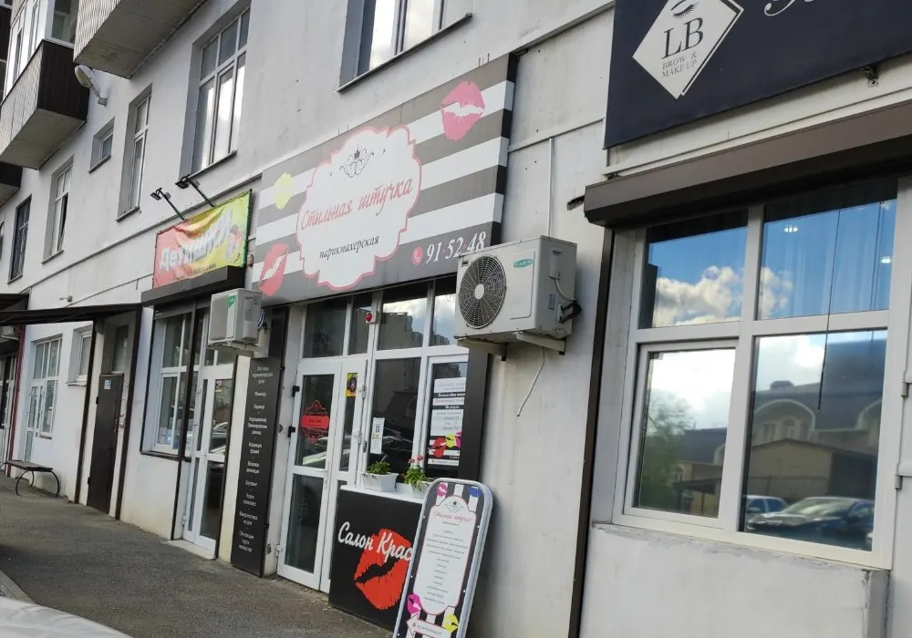
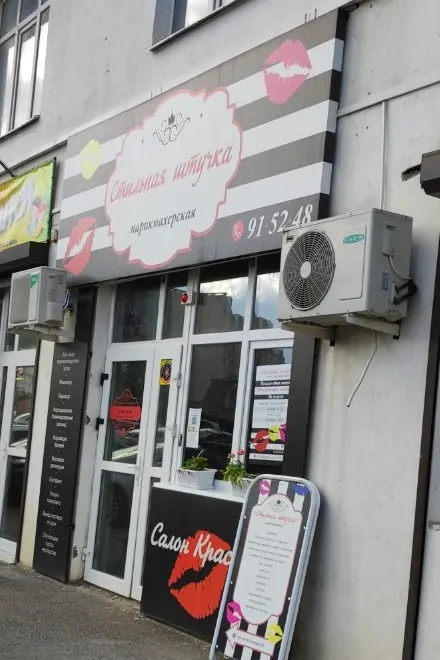
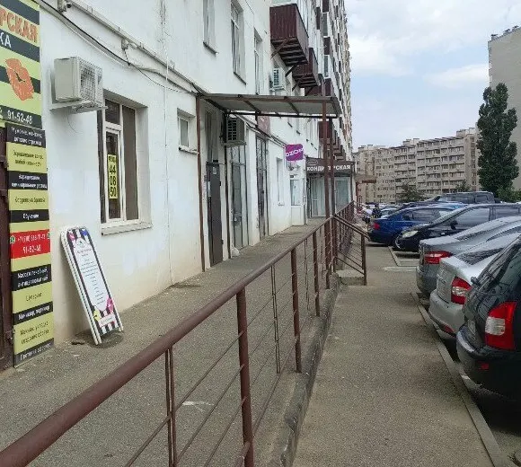

Салон-парикмахерская · стрижки · маникюр
Салон «Стильная штучка» в Ставрополе
Стрижки и маникюр в Ставрополе. Выбираете услугу, день и время – запись уходит в WhatsApp. На карточке салона прайса нет, поэтому цену называют при записи.
- 4,2 на Яндекс Картах, 7 оценок
- Проспект Кулакова, 51
- Цену называют при записи

Услуги салона
На карточке «Стильной штучки» на Яндекс Картах прайса нет – цены не выдумываем, их называют при записи. Услуги – те, о которых пишут гости в отзывах.
Парикмахерская и маникюр
- Стрижкапо отзыву гостя: аккуратно, чётко по пожеланиямуточнить
- Маникюрпо отзыву гостя: аккуратно, учли все пожеланияуточнить
Цены на карточке не указаны – уточняйте по телефону +7 (8652) 91-52-48 или в WhatsApp.
Как записаться
- 01
Выбираете услугу, день и время
Ниже, в форме записи: сообщение уходит в WhatsApp с готовым текстом.
- 02
Или звоните сами
Телефон – +7 (8652) 91-52-48, он же в конце страницы.
- 03
Приходите на проспект Кулакова, 51
Ищите вывеску «Стильная штучка» над входом.


Что вас ждёт
Аккуратно и по вашим пожеланиям
Так пишут гости в отзывах: «сделали все аккуратно, учли все пожелания».
Чисто и уютно
В отзывах: «аккуратно, чисто и приятно», «атмосфера в салоне уютная, персонал вежливый».
Мастер Сусанна
Отзыв на карточке: «Парикмахер Сусанна-супер мастер!»
Адекватные цены
Так пишут гости; точную стоимость называют при записи.
Отзывы с Яндекс.Карт
«Хороший салон, приятно удивил. Обратился за стрижкой — мастер всё сделал аккуратно, чётко по моим пожеланиям, без лишних разговоров. Подстригли быстро, но при этом качественно. Атмосфера в салоне уютная, персонал вежливый. Цены адекватные. Буду рекомендовать знакомым. Спасибо «Стильной штучке»!»
Кокушибо Тсуджикуни · 19 марта
«Отличный салон, прекрасные цены ,мастера замечательные вежливые Делала маникюр , все понравилось , сделали все аккуратно , учли все пожелания . В салоне аккуратно , чисто и приятно. Желаю много клинтов и процветания салону .»
elena k. · 1 августа 2025
«Парикмахер Сусанна-супер мастер!»
Рюмина Виктория · 15 декабря 2024
Отзывы с карточки на Яндекс.Картах, без правок.
Частые вопросы
Сколько стоит стрижка или маникюр?
На карточке салона прайса нет, поэтому цену называют при записи: по телефону +7 (8652) 91-52-48 или в WhatsApp.
Как записаться?
Через форму на сайте (сообщение уйдёт в WhatsApp) или по телефону +7 (8652) 91-52-48.
Где вы находитесь?
Ставрополь, проспект Кулакова, 51. Ищите вывеску «Стильная штучка» над входом.
До скольких работаете?
На карточке указано, что салон открыт до 20:00; график по дням уточняйте при записи.
Запишитесь на удобное время
- Адрес
- проспект Кулакова, 51, Ставрополь
- Часы
- открыто до 20:00, график по дням уточняйте при записи
- Телефон
- +7 (8652) 91-52-48